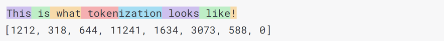

What is a ChatGPT Token? Decoding the Basics
By Split Prompt · 2 min read · 22 Sep 2023
If you've found yourself asking "what is a ChatGPT token?", you're in the right place. The concept of tokens, is integral to how modern language models function. This article provides an introductory understanding of ChatGPT tokens and their underlying purpose.
What Exactly is a ChatGPT Token?
A token, in the realm of natural language processing (NLP), is a unit or chunk of text. In simple terms, think of it as a combination of characters that are often used together. A token can be a single letter, part of a word, or even a whole word.
The Significance of ChatGPT Tokens
Here's why tokenization is the backbone of ChatGPT:
- Data Breakdown: Tokens allow ChatGPT to dissect textual data into processable units.
- Efficiency: Tokens streamline the training process, letting ChatGPT learn patterns faster.
- Adaptability: Tokens ensure ChatGPT's compatibility with various languages and scripts.
ChatGPT's Token Lifecycle
- Tokenization of Input: ChatGPT divides your text into recognizable tokens.
- Token Comprehension: These tokens are analyzed to understand context and relationships.
- Response Creation: Based on the token analysis, ChatGPT crafts a response.
- Detokenization: The model then converts tokens back into a user-friendly output.
Navigating ChatGPT Token Limits
Every ChatGPT model, due to the constraints of the underlying transformer architecture, must have a maximum token limit on inputs. When prompts surpass this limit, they require truncation, splitting, or other adjustments.
To address this challenge, we created Split Prompt. This user-friendly tool processes extended ChatGPT prompts, taking into account the model's limited context window, to offer a novel recursive long-prompt solution.